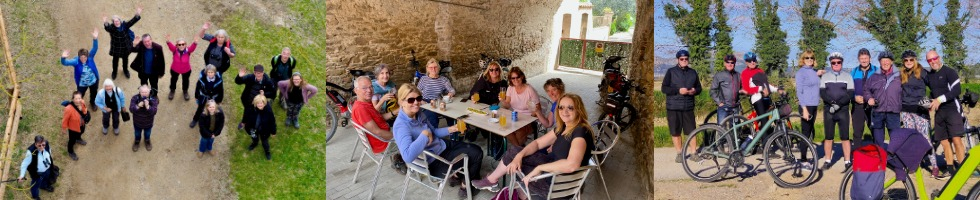

History of the U3A Organisation
U3A stands for the University of the Third Age, a worldwide organization that provides educational opportunities for retired and semi-retired individuals. The first U3A was founded in Toulouse, France, in 1972, by Professor Pierre Vellas, a former director of the French National Centre for Scientific Research.
Today, there are over 1,000 U3As in the UK, with a total membership of over 400,000. The U3A movement has also spread to other countries, including Australia, Canada, and New Zealand, and there are now 1,000’s worldwide.
The idea behind the U3A is to provide lifelong learning opportunities for older adults, who have finished their formal education but still have a desire to continue learning and engaging with others. The U3A is run entirely by volunteers and offers a wide range of interest groups such as gardening, art, music, history, and our main focus here in the Costa Brava is outdoor activities such as walking, cycling, walking football and more.
In addition to providing educational opportunities, U3As also offer opportunities for socialisation and community involvement. U3As also organize social events, trips, and outings, which allow members to get to know each other and form new friendships.
We are mainly English speaking and currently have around 400 members and offer activities to suit all ages and abilities. There are 40 groups currently – they are listed on the groups tab above. The groups are self-managed by a volunteer “Coordinator” who manages membership of their group, who ensures that events are organised and that they are consistent with the stated aims of the group.
We arrange a number of Association Meetings during the year, which all members are invited to attend. These provide an opportunity for members to meet the President and the committee, and also members of other groups. Of course, we also have a more formal Annual General Meeting, which provides a forum for the good governance of the organisation and the election of officers and committee members.
We also actively seek opportunities to promote and encourage integration with the local Catalan community.
Overall, the U3A has become a popular organization for older adults looking to continue learning, stay active, and engage with their communities.